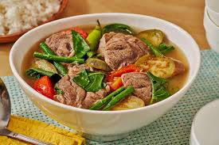

Sinigang

Description:
Sinigang is a popular Filipino soup known for its sour and savory flavor, typically made with pork, shrimp, or fish and a variety of vegetables.
Ingredients:
- Pork or shrimp
- Tamarind paste or fresh tamarind
- Tomatoes
- Radish
- Eggplant
- String beans
- Water spinach (kangkong)
- Onion
- Fish sauce
- Water
Cooking Process:
- Boil water in a pot and add tamarind paste or fresh tamarind.
- Add chopped tomatoes and onions.
- Add pork or shrimp and cook until tender.
- Add radish, eggplant, and string beans. Cook until vegetables are tender.
- Add water spinach and fish sauce to taste.
- Simmer for a few more minutes and serve hot.